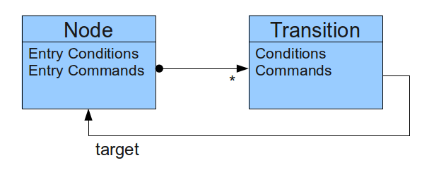

This document describes the behaviour of the generated state machine. It helps to explain what happens to the parts of a Node and Transition in the state model.
Each State Transition as carried out in response to the "step" method. The "step" method will be generated with the name of the state model. For example a model called "gps" will have a step method "gpsStep". The calling procedure is to set up the input variable then call this method.
Considering the anatomy of a Node:
On calling the Step method:
Transitions can be set to skip the entry commands associated with the target node. This feature is used to create the number parsing state machines. For example a state machine that reads data into an array will set the array index to zero when first entered. By allowing a "transition to self" that does not process that reset, it is possible to read the array without needing an additional state for subsequent bytes.
Subroutines are implemented as Commands in the above model. This results in subroutines acting as interruptions to normal transitions. A subroutine may be inserted in a transition or placed as an entry command in a node.
The state engine supports a single stack level. Attempts to go deeper overwrite the stack. Attempts to return when not in a subroutine will likely cause a crash or unexpected behaviour.
The Enter Subroutine command stores the location of the next instruction on the stack. It then renders a "Go to Node" command to switch to the subroutine as if it was the next state.
The Return from Subroutine command branches to the instruction located on the stack. This will cause the transition that entered the subroutine to continue. Note that transitions always render all preconditions before rendering commands. The means that it is not possible to insert conditions after the subroutine returns before the target node is entered.